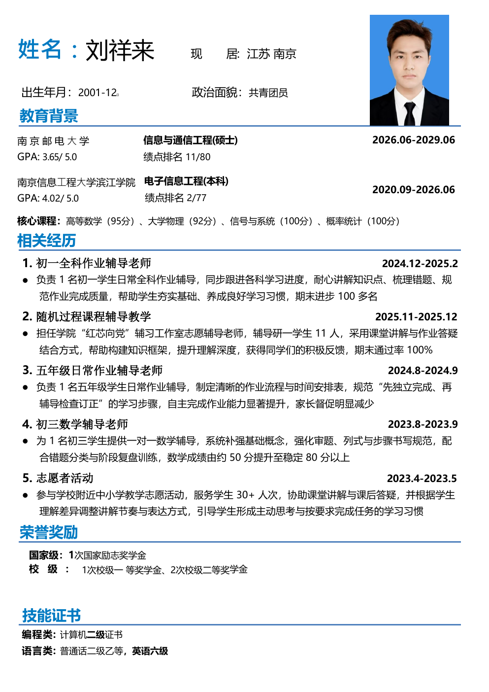

南京邮电大学
2026.06 — 2029.06信息与通信工程 · 硕士研究生
GPA / 排名：3.65 / 5.0 · 11 / 80
研究方向、课题组及课程成果可在研究生阶段补充。
PERSONAL PROFILE · 2026
信息与通信工程硕士研究生 · 南京邮电大学
电子信息工程本科，具备扎实的数学与信号系统基础。长期参与中小学课业辅导与课程志愿服务，善于拆解知识难点、建立清晰的学习路径，并根据学生反馈调整讲解节奏。

NJUPT · 2026GPA / 排名：3.65 / 5.0 · 11 / 80
研究方向、课题组及课程成果可在研究生阶段补充。
GPA / 排名：4.02 / 5.0 · 2 / 77
核心课程：高等数学（95）、大学物理（92）、信号与系统（100）、概率统计（100）
负责 1 名初一学生日常全科作业辅导，跟进学习进度，梳理错题并规范作业完成质量。帮助学生夯实基础、养成学习习惯，期末进步 100 多名。
担任学院“红芯向党”辅导工作室志愿辅导老师，辅导研一学生 11 人。采用课堂讲解与作业答疑结合的方式，帮助搭建知识框架、提升理解深度，期末通过率 100%。
负责 1 名五年级学生日常作业辅导，制定作业流程与时间安排，引导学生先独立完成再检查订正，提升自主完成能力并减少家长督促。
为 1 名初三学生提供一对一数学辅导，强化基础概念、审题、列式与步骤书写，结合错题分类和阶段复盘训练，帮助数学成绩由约 50 分提升至稳定 80 分以上。
参与学校附近中小学教学志愿活动，服务学生 30+ 人次，协助课堂讲解与课后答疑，并根据学生理解差异调整讲解节奏与表达方式。
可填写研究主题、个人职责、关键方法与阶段成果。建议用“问题—行动—结果”描述，加入可核实的数据或产出。
论文题目、作者顺序、期刊或会议、发表状态；也可加入专利、竞赛、奖学金、助研与实习经历。